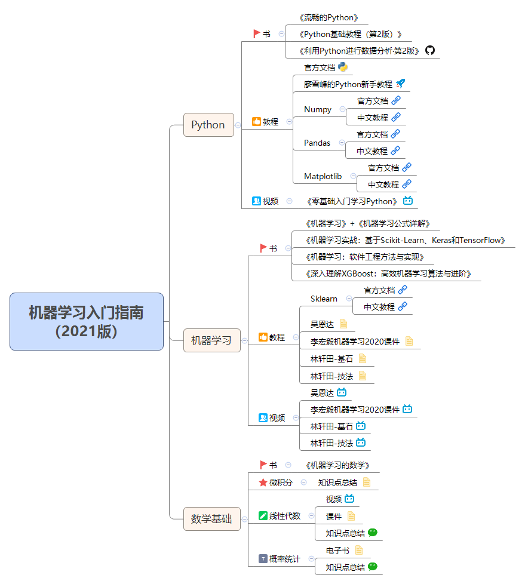
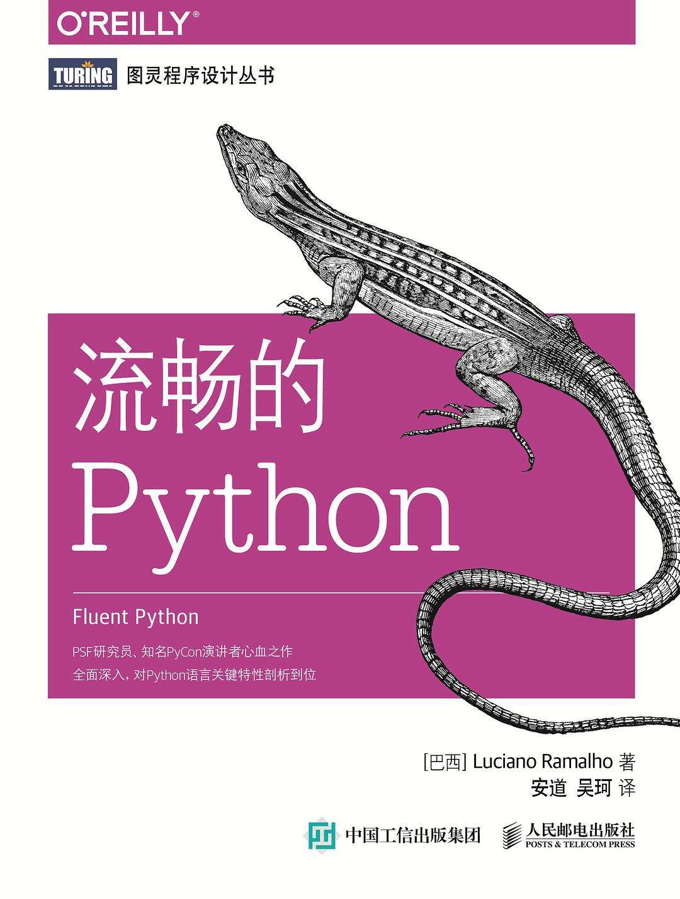
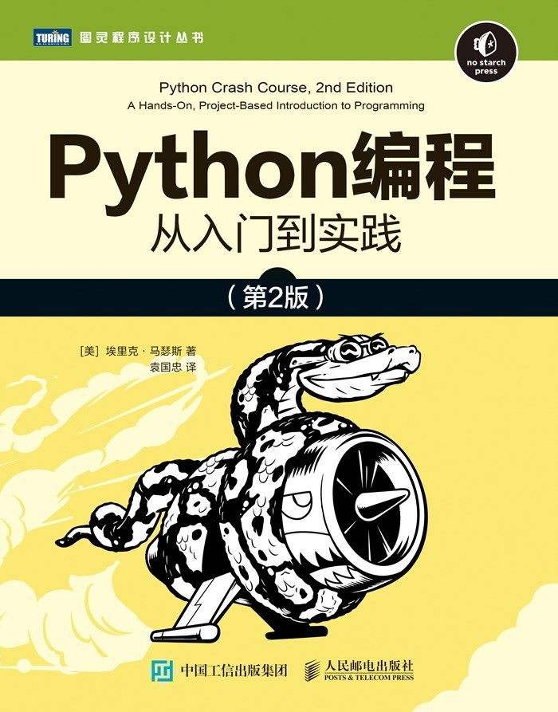
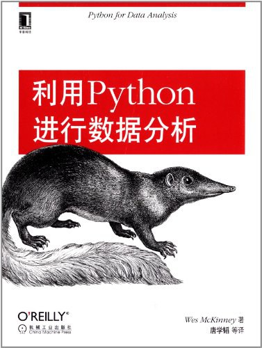
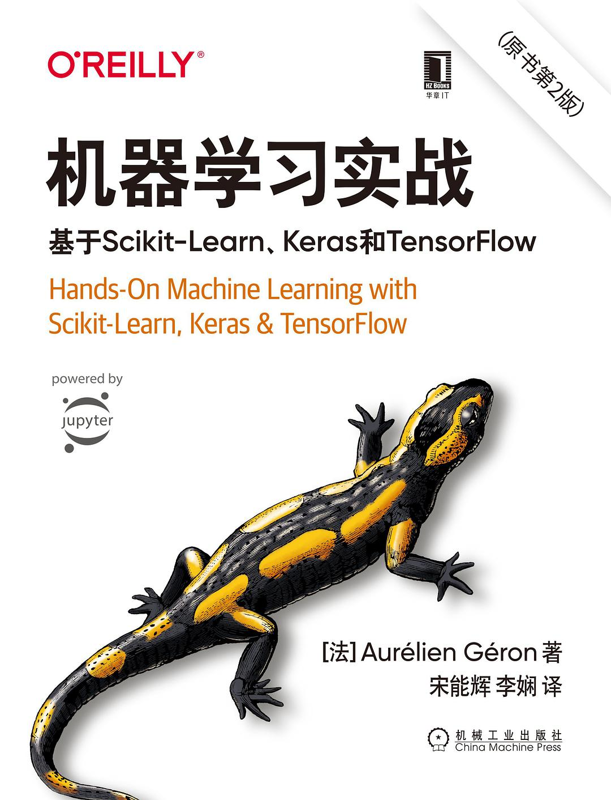
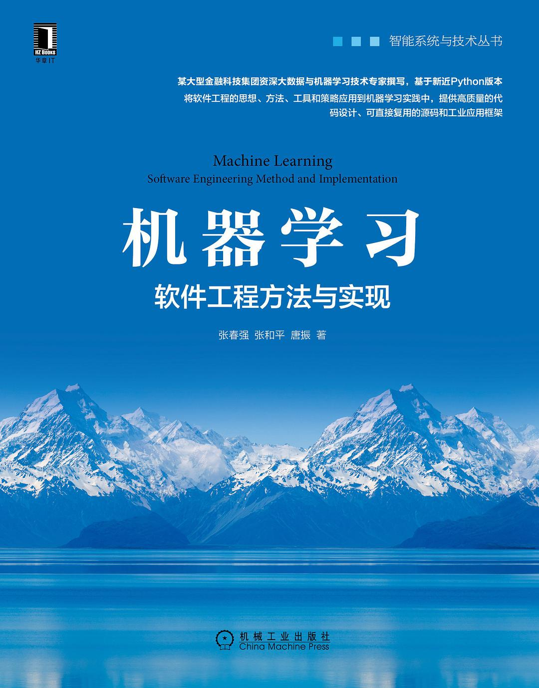

R2ML
2022-01-19
第 1 章 机器学习入门指南（极简版）
我更倾向于把它称为一本百科百科全书，我会把基础框架搭好并开源，每一个章节，大家如果有更好的文章可以投稿给我，或者在github提交代码
https://github.com/tjxj/bookdown-r2ml
由于内容过于庞大，大家可以优先看一下这个极简版，分享我机器学习之路看过的一些书、教程、视频，还有学习经验和建议，希望能对大家的学习有所帮助。

1.1 Python
1.1.1 Python——书
之前跟出版社合作，书柜里积攒了很多Python相关的书，这里推荐三本最有价值的吧。
- 《流畅的Python》，很厚，比较全面，可以作为工具书常常翻看。

- 《 从入门到实践（第2版）》 非常全面，对新手还算友好，里面有很多的练习项目非常不错。

- 《利用Python进行数据分析·第2版》 数据分析入门必读书，主要介绍了python 3个库numpy（数组），pandas（数据分析）和matplotlib（绘图）的学习。有开源版，就不用买了，下载链接及代码如下：

https://github.com/iamseancheney/python_for_data_analysis_2nd_chinese_version
1.1.2 Python——教程
学习Python最好的入门线上教程，首推Python官方文档
https://docs.python.org/zh-cn/3/tutorial/index.html
官方文档足够详细和系统，但是内容太庞大，学习来会有点吃力，我建议只看tutorial即可，就是上面的链接。
直接啃官方文档的教材，不如老师讲给你听来的效率高。廖雪峰的Python新手教程也是个不错的选择，每一节都有练习题，学习来更顺畅，对新手很友好。
https://www.liaoxuefeng.com/wiki/1016959663602400
机器学习最常用的库少不了Numpy Pandas Matplotlib这些库我觉得看官方文档就好了，不过英文不好的同学可能就不满意了，这里分别列一下这些库的官方文档和我觉得很不错的中文教程，提醒一下哈，官方文档只需要看我列出的链接即可。
Numpy
官方文档：https://numpy.org/doc/stable/user/quickstart.html
中文教程：https://www.numpy.org.cn/user/quickstart.html
Pandas
官方文档：https://pandas.pydata.org/docs/user_guide/10min.html
中文教程：https://www.pypandas.cn/docs/getting_started/10min.html
Matplotlib
官方文档：https://matplotlib.org/stable/tutorials/introductory/usage.html
中文教程：https://www.matplotlib.org.cn/tutorials/
1.1.3 Python——视频
实话实话，我没有完整的看过任何Python视频。归根结底，Python入门很简单，看视频效率太低。传言B站的[小甲鱼]零基础入门学习Python不错，简单看了一眼，确实0基础。我们用Python是用来学机器学习的，喜欢看视频学习的同学可以看看，建议只看P1-P53即可。
《零基础入门学习Python》：https://www.bilibili.com/video/av27789609
1.2 机器学习
1.2.1 机器学习——书
市面上凡推荐机器学习的书，都少不了李航的《统计学习方法》和周志华的《机器学习》，我当初也是看了大佬推荐，在这两本书上耗费了极多的时间。但这两本我觉得都很不适合入门，尤其是统计学习方法，简直就是上等武功秘籍，太过精炼，啃起来太吃力。对比起来周老师的《机器学习》相对好点，其中有些公式推导有点跳，Datawhale 出了一本开源的《机器学习公式详解》是个很好的补充。周世华的《机器学习》是必不可少的工具书，还是必读的，而且要反复阅读，不过建议在看过视频教程之后。
https://datawhalechina.github.io/pumpkin-book
偏应用的书，只推荐一本，其他的都不要看！！！：《机器学习实战：基于Scikit-Learn、Keras和TensorFlow（原书第2版）》，入门可以先看前 9 章。

市面上很少有书能够把机器学习在业务层面的应用介绍清楚，比如模型解释、模型上线，模型监控等等，没有看到特别详细的，有一本还算满意，就是知名度比较低：《机器学习：软件工程方法与实现。

现在无论是竞赛还是工业界，boost模型都应用十分广泛，分类、回归、排序，XGBoost都能搞。最后再介绍一本我认为的必读：《深入理解XGBoost：高效机器学习算法与进阶》，作者是XGBoost开源社区贡献者何龙。这本书以机器学习基础知识做铺垫，深入剖析了XGBoost的原理、分布式实现、模型优化、深度应用等。
1.2.2 机器学习——教程
教程没有看到太好的，除了sklearn的文档，只推荐吴恩达、李宏毅、林轩田三位老师的视频课件。课件这里不单独列出来了，下载链接我放到思维导图里了。
Sklearn
官方文档：https://scikit-learn.org/stable/user_guide.html
中文教程：https://sklearn.apachecn.org/
1.2.3 机器学习——视频
与Python不同，机器学习基础我觉得最好还是跟着视频学，因为初学机器学习算法，涉及很多公式推导，非常难理解，跟着视频学起来会轻松不少。
视频首推吴恩达的公开课，这是学习机器学习基础知识的最好的课程。英语不好的同学也不要担心，视频是有中文字幕的。
https://www.bilibili.com/video/BV164411b7dx
作为补充，时间充裕的同学可以看看台大李宏毅的机器学习公开课，特点是中文授课，比较轻松愉快。
https://www.bilibili.com/video/BV1pE411g7Wi
时间更充裕的也可以看看林轩田的视频课，只看基石部分即可。
https://www.bilibili.com/video/BV1Ft41197Dy
1.2.4 机器学习——数学基础
系统地学习机器学习所必须的数学知识
数学基础这一块是个无底洞，不太建议大家耗费过多时间，用到了再补也不迟。
也不建议大家看书，基础确实特别薄弱的同学，推荐一本：《机器学习的数学》，这本书特别全面的介绍了微积分、线性代数、概率统计、信息论、随机过程、图论等内容。再强调一遍，此书仅适于基础特别薄弱的同学。
我感觉机器学习中用到最多的应该是线代，喜欢看视频的可以看看李宏毅的机器学习中的线性代数：
https://www.bilibili.com/video/BV1G7411f7BE/
或者3blue1brown：线性代数的本质
https://www.bilibili.com/video/BV1Ys411k7yQ
其他数学基础相关的电子书，我也放到思维导图中了。
1.3 一些经验和建议
1、我敢肯定很多初学者都是资料收集爱好者，越攒越多反而不知道从何开始。我强烈建议把资料都扔掉，以我的这一套为准，一以贯之的学下去。
2、就像前面我提到的，很多东西先不要深究，不要在某些地方卡太久（比如数学部分，比如编程基础），先学下去，学完。了解大的框架之后，以后用到哪里，再回过来补也不迟。
3、机器学习的各种算法没必要样样精通，常用的比如LR、树模型、RF、XGBoost等等掌握好就不错了。
4、我身边一些优秀的程序员、分析师、工程师都非常推崇“做中学，学中做”，无论是书本还是视频，看到一些好的方法和技巧，要立即自己实现一遍。看起来非常简单的东西，真真动手的时候才会发现自己的不足。快速学完上述内容就尽快开始实践吧，可以先复现天池或kaggle上优秀的notebook，然后就参与一些入门竞赛。
5、如果你已有工作，最好的还是在业务中寻找机器学习应用场景，然后尝试去开发一个适用的模型。不懂就搜索，学习。这是我所知最好的，最有价值的学习方法。
6、输出也是特别好的学习方式，输出就是把新学到的知识用某种方式讲给别人听，做到让他们也能理解、学会。我比较喜欢写笔记（我常用的是微软的OneNote），然后把笔记整理成文章发到博客上。这样不仅使对自己知识掌握程度的一种检验，发现薄弱点，也可以让大家共同监督，相互学习，教学相长。
OK，以上就是所有内容。